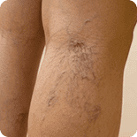
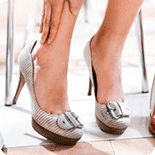
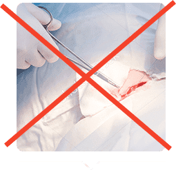
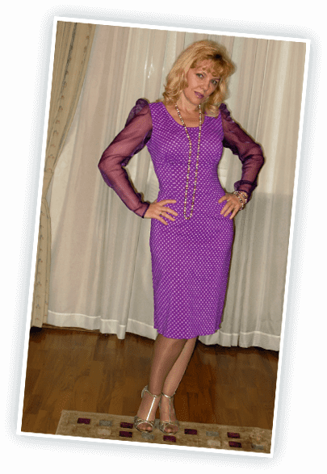
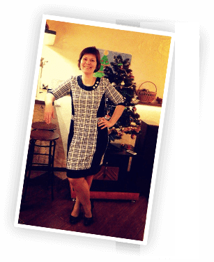
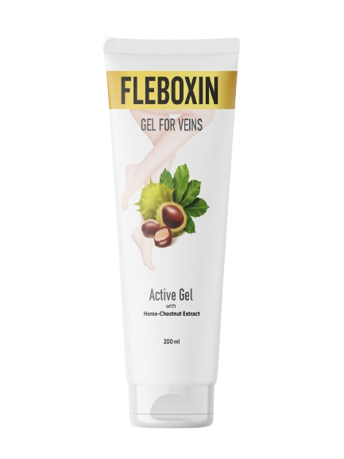
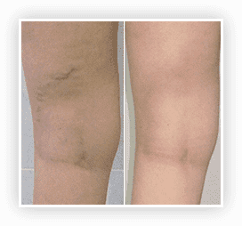
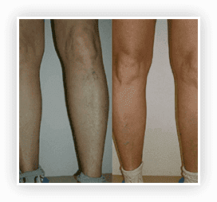
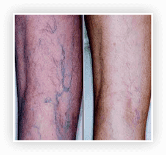
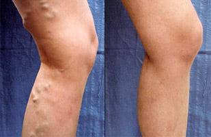

Badanie skuteczności kursu przeprowadzono w instytucie badawczym Actinium przy udziale 1436
wolontariuszy przy użyciu testu aplikacyjnego. Krem Fleboxin nakładano dwa razy dziennie przez cztery
tygodnie.
Skuteczność kursu oceniano za kształtem splotu naczyniowego i szerokości naczynia centralnego.
Pomiary przeprowadzono za pomocą cyfrowej suwmiarki różnicowej DIN 862 z interfejsem RS 232 C firmy
Vogel Australia Co.KG.
Zawiera 100%
składników roślinnych
składników roślinnych
1542 osób
zamówili DZISIAJ
zamówili DZISIAJ
Jak długo będzie spokojnie patrzeć, jak
ŻYLAKI ZABIJA
PIĘKNO I ZDROWIE TWOICH NÓG
ŻYLAKI ZABIJA
PIĘKNO I ZDROWIE TWOICH NÓG
Usunie
przyczynę żylaków
przyczynę żylaków
Pozbawi od siatki żylnej
Neutralizuje
ból i obrzęk
ból i obrzęk
Eliminuje pajączki

Opakowań na promocję: 23
% wartości masz w
prezencie
Promocja zakończy się przez
00
:
27
:
00
godzin
minut
sekund
UKRYWAJĄ SWOJE NOGI - PRZYMYKAJĄ OCZY NA KONSEKWENCJE
W piękny letni dzień w spodniach lub rajstopach! Jest gorąco!

Sucha skóra, naczyniowe gwiazdki, żyły sinicze! To jest brzydkie!
Dręczy obrzęk, kostki są opuchnięte, stopy bzyczą! Jesteś zniszczona i nie masz już
siły! Boli!

Buty z wysokimi obcasami są w przeszłości, a inne biegają na szpilkach!
Niekobiece!
Masz piękne nogi, ale musisz ukryć je pod sukienką! Wstyd!

Konwulsje zdarzają się coraz częściej i przerażają Ciebie i Twoich bliskich. Niebezpiecznie!
Przez 1 miesiąc letni żylaki rozwijają się szybciej i bardziej przerażająco niż na 9
zimnich. Nie zwlekaj!
Żylaki są nie tylko BRZYDKIE, ale
но и śmiertelnie niebiezpiecznie!
но и śmiertelnie niebiezpiecznie!
Pierwszy stopień
Drugi stopień
Trzeci stopień jest
NIEULECZALNY
13 milionów kobiet z zapaleniem żylaków w stadium 1,2,3 jest już chore!
Nagłe zagrożenie
Tworzenie się skrzepów krwi (skrzeplin) wewnątrz naczyń krwionośnych.
Nagłe zerwanie zakrzepu krwi i dostanie się do naczyń mózgu może spowodować udar, paraliż i natychmiastową śmierć.
Nagłe zerwanie zakrzepu krwi i dostanie się do naczyń mózgu może spowodować udar, paraliż i natychmiastową śmierć.
Zakrzepica
żył głębokich
żył głębokich

Nieznośny ból
Ściany żył zostają zaognione, powodując nieznośny ból. Spowolnienie przepływu krwi.
Niebieska skórza nóg. Powstanie owrzodzeń troficznych
zakrzepowe
zapalenie żył
zapalenie żył
Żylaki narządów wewnętrznych

żylaki miednicy
Wpływa na żyły jajników, żyły biodrowe, żylny splot
pęcherza i żyły macicy. Żylaki miednicy mogą prowadzić do chronicznych hemoroidów.
Żylaki przydatków macicy
Żylaki wpływają na macicę. Objawy: ciągnące bóle w
podbrzuszu, wydłużenie czasu trwania miesiączki, dyskomfort podczas stosunku. Zakłócenia w dopływie krwi do jajników są niebezpieczne z powodu rozwoju niepłodności u kobiet.
żylaki przełyku
Wcześniej czy później cienkie ściany żył mogą pęknąć w żołądku lub przełyku,
powodując wewnętrzne krwawienie osoby z krwiopluciem i czarny, żywiczny stolec.
Jest to bezpośrednie zagrożenie dla życia.
Nie oszpecaj nóg! Zadbaj o jeszcze
żywe naczynie krwionośne.
Pozbądź się teraz żylaków.
żywe naczynie krwionośne.
Pozbądź się teraz żylaków.
Bez antybiotyków

BEZ SKALPELA
Bez kosztownych zabiegów
WYKORZYSTAJ ŚRODKI, W SKUTECZNOŚCI KTÓRYCH TYSIĄCE KOBIET SĄ PRZEKONANE!
Możemy śmiało stwierdzić: długotrwałe stosowanie krem -
najlepszy sposób na zapobieganie i kontrolę żylaków!
Badania potwierdziły: regularne stosowanie leku po 1,5 tygodniach zmniejsza kruchość naczyń włosowatych, odżywia i uelastycznia skórę nóg, eliminuje pęknięcia i mikrouszkodzenia.
Badania potwierdziły: regularne stosowanie leku po 1,5 tygodniach zmniejsza kruchość naczyń włosowatych, odżywia i uelastycznia skórę nóg, eliminuje pęknięcia i mikrouszkodzenia.
60%
40%
20%
0%
2018
2019
2020
Prowadzone badania
Udowadnia skuteczność Fleboxin
Udowadnia skuteczność Fleboxin
Fleboxin
Inne środki
Badania kliniczne dowodzą skuteczność stosowania Fleboxin w celach
profilaktycznych.


Fleboxin
Fleboxin - PIERWSZY KREM, STWORZONY NA PODSTAWIE EKSTRAKTÓW OLEJÓW RZADKICH ROŚLIN NATURALNYCH ZNISZCZAJĄCYCH PRZYCZYNY I KONSEKWENCJE ŻYLAKÓW
Zawiera naturalną rutynę. Jego pochodna - troxirutin ma aktywność witaminy P,
okazuje korzystny wpływ na stan żył i naczyń włosowatych.
Rosmarinus Officinalis Leaf Oil
Tritikum
Sativum Oil
Sativum Oil
Usunięcie sieci żylnej w ciągu 3 tygodniu

Thymus Vulgaris Flower Oil
Aesculus Hippocastenum
sprawiają, że ściany naczyń są bardziej trwałe i elastyczne
Fleboxin działa znacznie skuteczniej niż jakiekolwiek środki.
Fleboxin to koncentrat ekstraktów leczniczych z 9 rzadkich roślin. Żylaki nie mają szans!
Fleboxin to koncentrat ekstraktów leczniczych z 9 rzadkich roślin. Żylaki nie mają szans!
Hamamelis Virginiana
Lavandula Hybrida Oil
Aloe Vera Barbadensis
Środki przyczyniają się do zniknięcia obrzęku i ociężałości
postać ciekłokrystaliczna
Przywraca odpływ krwi
Wzmacnia ściany naczyń krwionośnych
Łagodzi ból w nogach
Zapobiega tworzeniu się skrzepów krwi w żyłach
Wybawiaje od drgawek
Eliminuje obrzęk
Fleboxin - jest jedyną alternatywą dla interwencji
chirurgicznej
WYNIKI ZA 18 DNI

PRZED I PO Fleboxin
WYNIKI ZA 3,5 TYGODNIA

PRZED I PO Fleboxin
WYNIKI ZA 5 TYGODNI

PRZED I PO Fleboxin
Fleboxin PROTESTOWANY PRZEZ
AUSTRALIJSKICH NAUKOWCÓW
AUSTRALIJSKICH NAUKOWCÓW
W wyniku zastosowania krem Fleboxin z 4% kompleksu BC uzyskano następujące dane:
Szerokość centralnego naczynia zmniejszyła się o 87,8%.
Rozszerzenie sieci naczyniowej zmniejszyło się o 90%.
OPINIA chirurga phlebologista
Pochodzę z Australii i wiem z pierwszej ręki o niesamowitej sile natury dla zdrowia.
Badanie przeprowadzone przez Fleboxin było bardzo ważne dla całej społeczności flebologicznej.
Wspólnie z australijskimi naukowcami opracowaliśmy formułę jednego z najskuteczniejszych leków przeciw żylakom. Fleboxin już pomógł tysiącom kobiet przeżyć uczucie lekkości i zapomnieć o obrzęku nóg.
Jestem pewna, że krem pomoże twoim stopom i nie będziesz musiała "leżeć pod nożem". Wiem, o czym mówię, bo sama jestem chirurgiem. Nie potrzebujesz mojej pomocy, teraz masz Fleboxin.
Wspólnie z australijskimi naukowcami opracowaliśmy formułę jednego z najskuteczniejszych leków przeciw żylakom. Fleboxin już pomógł tysiącom kobiet przeżyć uczucie lekkości i zapomnieć o obrzęku nóg.
Jestem pewna, że krem pomoże twoim stopom i nie będziesz musiała "leżeć pod nożem". Wiem, o czym mówię, bo sama jestem chirurgiem. Nie potrzebujesz mojej pomocy, teraz masz Fleboxin.
Maksymalna liczba ocen
pozytywnych
5
87%
4
12%
3
0%
2
0%
1
0%

Po porodzie zaczęły się problemy z żyłami. Pończochy uciskowe nie uratowały. Żyły
zaczęły szaleć. Nogi były pokryte żylnymi "kopcami" pod koniec dnia! Wyglądało to okropnie.
Naturalnie, miałam obrzęk, ból. Myślałem, że ciąża - trudno, ale po urodzeniu córki, nie mogła latać
ze szczęścia, a tylko pełzać jak kaleka :( poszłam do lekarza, i to właśnie on poradził mi używać
tego krem Fleboxin codziennie, 2 razy dziennie. Pierwszy efekt zobaczyłam po 5 dniach. Obrzęk i ból
ustąpili. Żyły przestały się wybrzuszać, ale wyglądały prawie normalnie. Po miesiącu używania
zauważyła, że ból zniknął, moje nogi nie były już "brzęczące" i prawie nie puchły. Kontynuuję
leczenie!
JAK DZIAŁAMY?

KROK 1
Złóż zamówienie i otrzymaj zniżkę
Złóż zamówienie i otrzymaj zniżkę
KROK 2
Poczekaj na telefon od konsultanta, aby uzgodnić szczegóły
Poczekaj na telefon od konsultanta, aby uzgodnić szczegóły
KROK 3
Płatność po dostawie
Płatność po dostawie
UWAGA!
W związku z popularnością środku w Internecie wzrosła liczba przypadków podróbek po
niższej cenie.
Tylko tutaj, na oficjalnej stronie internetowej Fleboxin można kupić oryginalny produkt
Tylko tutaj, na oficjalnej stronie internetowej Fleboxin można kupić oryginalny produkt
Setki tysięcy kobiet pozbyli się żylaków
w domu tylko w ciągu jednego kursu!
Zrób i ty to samo!
w domu tylko w ciągu jednego kursu!
Zrób i ty to samo!
Usunie przyczynę żylaków
Pozbawi od siatki żylnej
Neutralizuje
ból i obrzęk
ból i obrzęk
Eliminuje pajączki
Opakowań na promocję: 23
% wartości
masz w prezencie
Promocja zakończy się przez
00
:
27
:
00
godzin
minut
sekund